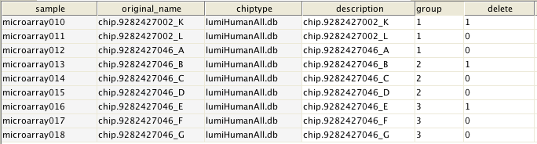

Delete the specified column or columns from the data and subtract their values from associated samples.
User needs to choose from phenodata one column that specifies which chips need to be deleted. Those chips that will be deleted need to be coded with 1 in the column. User also needs to choose from phenodata one column that specifies which chips go together and form sample groups. This listing also specifies those chips from which to remove the effects of chips to be deleted. If more than one chip are to be removed from a sample group, removed chips are averaged before their removal.
For example, consider a situation where one before (pre) and two post treatment samples have been taken from three patients (pat1, pat2 and pat3). Using this tool, the user can normalize post-samples by taking into account the fact that some chips (the ones from the same patient) go together and that each value in one chip has a natural partner in another chip. The normalization is done by subtracting pat1_pre values from pat1_post1 and pat1_post2 values, pat2_pre values from pat2_post1 and pat2_post2 values, etc, and the user must encode pat1_bef, pat2_bef, pat3_bef chips with 1 in the delete column and assign chips into groups based on their patient number marking chips from pat1 as 1, chips from pat2 as 2 and chips from pat3 as 3. An exemplifying phenodata matrix is given below.
A modified and smaller dataset suitable for further analyses.